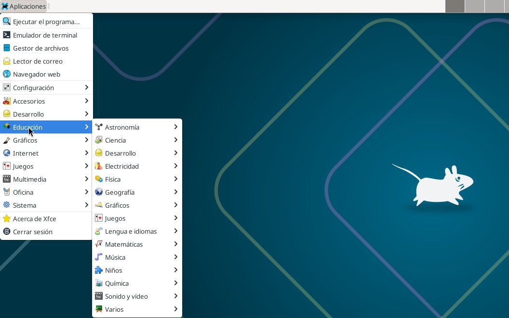
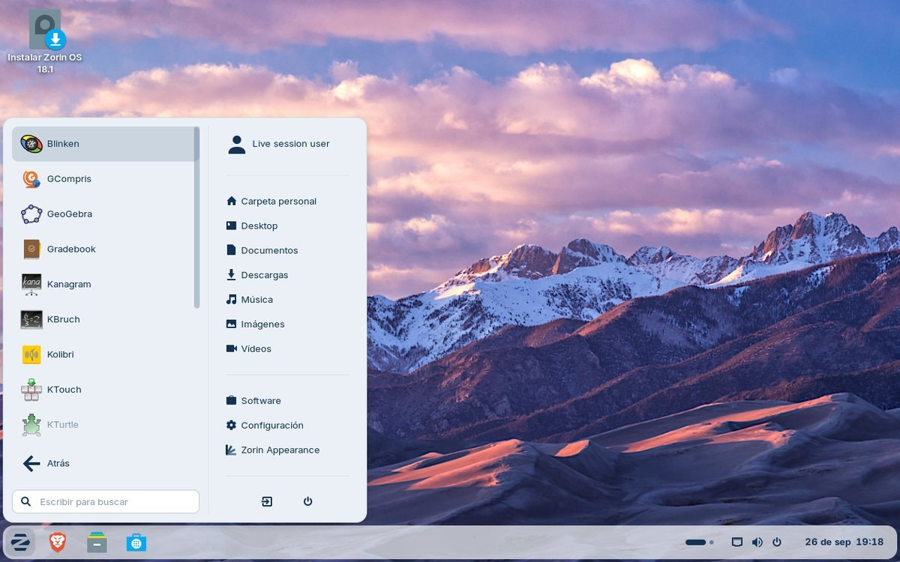
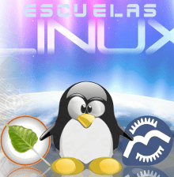
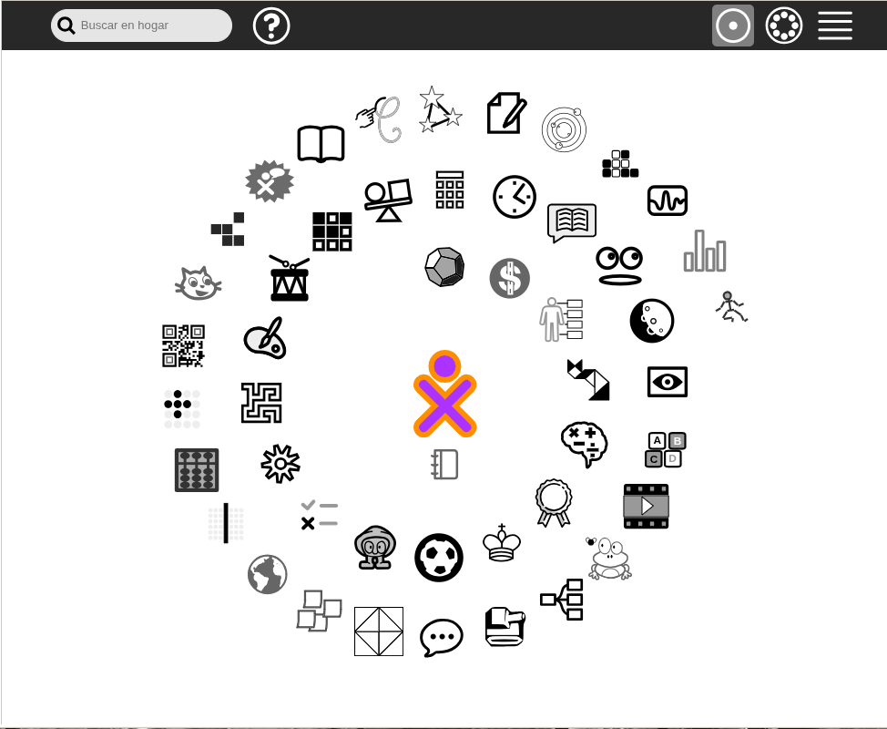
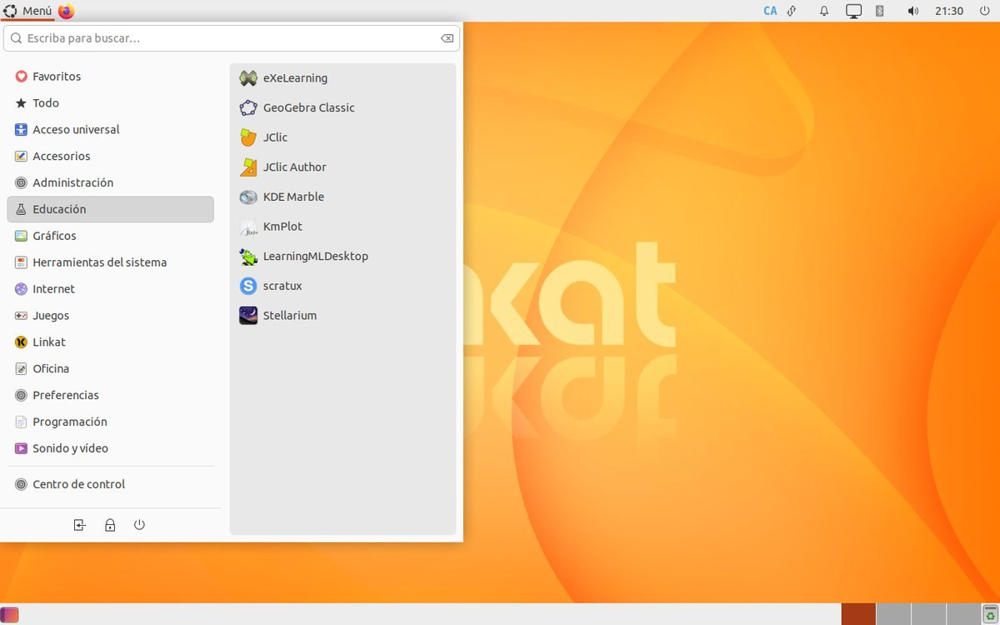

Los equipos informáticos de la escuela
Los ordenadores y las tabletas de un centro pueden funcionar con sistemas operativos muy distintos, y la elección condiciona los programas que se usan, el coste y de quién depende el centro. A continuación se comentan brevemente las opciones más habituales, con lo que ofrece cada una y lo que conviene tener en cuenta.
Microsoft Windows
Windows viene preinstalado en la mayoría de los ordenadores que se venden, y por eso ha sido durante años el sistema de casi todos los centros. Es el que más conoce el profesorado y el que tiene la mayor oferta de programas.
Sus inconvenientes para un centro son el coste de las licencias, tanto del sistema como de programas tan básicos como el procesador de textos o las presentaciones, y la dependencia de una sola empresa, que decide cuándo deja de actualizar el sistema y qué ordenadores pueden pasar a la versión siguiente.
Casi todo lo que se hace en clase con Windows tiene hoy una alternativa libre, y muchas de las que recoge esta guía funcionan también en él. Eso permite empezar el cambio por los programas antes que por el sistema, sobre todo en los equipos de gestión, donde algún programa administrativo puede exigir Windows todavía.
A lo anterior se añade un motivo muy práctico. Microsoft dejó de publicar actualizaciones de seguridad para Windows 10 el 14 de octubre de 2025 y una parte de los ordenadores que hay hoy en los centros no cumplen los requisitos que pide la versión siguiente. Eso deja a muchos equipos en perfecto estado de uso fuera de juego, y la salida no tiene por qué ser comprar otros: en «Dar una segunda vida a los ordenadores» se explica cómo seguir aprovechándolos con Linux.
Apple
Los sistemas operativos de Apple (macOS en los ordenadores, iOS y iPadOS en los móviles y las tabletas) solo funcionan en los aparatos de la propia empresa. Destacan por la calidad de sus equipos y aplicaciones, sobre todo en diseño gráfico y edición de vídeo.
Para un centro, sus inconvenientes son el precio, más alto que el de un equipo con Windows o Linux tanto en la compra como en las reparaciones, y un ecosistema todavía más cerrado: los programas se instalan y los equipos se gestionan solo con las herramientas de Apple. Las condiciones especiales para educación abaratan la compra, pero atan al centro a una sola empresa también en los años siguientes.
Android
Android es el sistema operativo de la mayoría de teléfonos móviles y tabletas. Aunque esté basado en el núcleo de Linux, que es software libre, la versión que traen casi todos los aparatos incluye los servicios y las aplicaciones de Google, que no son libres. Este sistema operativo domina el mercado de los dispositivos móviles, con cerca del 68 % en 2026 según StatCounter, y probablemente es el sistema operativo que mejor conoce el alumnado.
Programa central de un sistema operativo: el que habla con el ordenador y reparte la memoria, el procesador y los aparatos conectados entre los demás programas. Un mismo núcleo, como el de Linux, puede estar debajo de sistemas muy distintos.
Un centro elige Android cuando decide trabajar con tabletas. Son fáciles de llevar, el alumnado ya sabe manejarlas y resultan apropiadas para leer, buscar información, ver vídeos o hacer fotografías y grabaciones. Para escribir textos largos, dibujar con precisión o programar, en cambio, un ordenador sigue siendo más cómodo, por lo que en Secundaria conviene que la tableta complemente al ordenador y no lo sustituya.
Las aplicaciones libres para el aula y la forma de encontrarlas se tratan en «Herramientas para Android».
ChromeOS
ChromeOS, de Google, es el sistema de los chromebooks, ordenadores pensados para trabajar sobre todo en el navegador Chrome y con los servicios de Google. Como en Android, el núcleo es Linux, pero el resto del sistema no es libre.
Existe también una versión, ChromeOS Flex, que se instala en ordenadores Windows, Mac o Linux que ya se tengan, con la que Google ofrece su propia salida para los equipos antiguos. Conviene saber que no cuenta con el arranque verificado ni con el chip de seguridad de los chromebooks y que, sobre todo, deja el centro atado a los servicios de la misma empresa.
Su principal ventaja es que funciona bien en equipos modestos y se administra con facilidad de forma centralizada. Su principal inconveniente es que el centro pasa a depender por completo de una empresa: los programas, los documentos y las cuentas del alumnado quedan en sus servicios.
Google, además, ofrece a los centros educativos que cumplen sus requisitos una edición gratuita de Google Workspace for Education, con herramientas que para las empresas son de pago, y junto a ella otras ediciones de pago con más funciones. Conviene recordar que esa gratuidad tiene condiciones y que la empresa las cambia cuando le conviene: en julio de 2022 el almacenamiento dejó de ser ilimitado y pasó a ser una reserva compartida por todo el centro. Por eso conviene valorar con cuidado qué datos del alumnado se confían a la plataforma, como se explica en «Datos y servicios digitales del centro», y no convertirla en la solución única a todas las necesidades del centro.
Linux
Linux, o GNU/Linux, es un sistema operativo libre. No hay uno solo, sino muchas versiones, llamadas distribuciones, entre las que hay algunas preparadas para la educación y otras pensadas para ordenadores antiguos, de modo que se puede elegir la que mejor se adapta a cada aula.
Sus ventajas para un centro son las del software libre: no hay que pagar licencias, se instala en todos los equipos que se quiera y permite aprovechar ordenadores que otros sistemas ya no admiten. Sus inconvenientes son que algunos programas muy concretos no tienen versión para Linux y que el profesorado, en general, lo conoce menos. Para quien empieza, un escritorio como el de Linux Mint o Zorin OS se maneja de forma muy parecida a Windows, y la mayoría de las tareas de clase se hacen igual.
La apuesta por Linux
Linux, o más correctamente GNU/Linux, es un sistema operativo (aunque sería más correcto decir el conjunto de ellos) que está formado por software libre, es decir, que sus componentes y su propia constitución son de libre acceso para cualquiera. Eso no significa que no pueda colarse nunca código malicioso, porque de hecho ha ocurrido alguna vez, sino algo más importante: que cualquiera puede examinarlo, que no hay nada oculto y que los problemas se detectan y se corrigen a la vista de todo el mundo, en lugar de quedar en manos de una sola empresa.
Entre las principales características de los sistemas operativos basados en Linux pueden citarse las siguientes:
- Son software libre y de código abierto. Además existe una enorme cantidad de programas libres para Linux.
- La inmensa mayoría pueden descargarse de Internet e instalarse al momento sin pagar nada. Conviene no confundirlo con la libertad del software, que es otra cosa: hay distribuciones libres que se venden con soporte para empresas, y programas gratuitos que no son libres en absoluto.
- Es especialmente potente en la gestión de redes y se utiliza de forma generalizada en los servidores, tanto de Internet como de empresas privadas, donde la gestión y protección de datos es muy importante.
- Los sistemas Linux sufren muchos menos virus y programas maliciosos que otros sistemas, tanto porque su código lo revisan y depuran miles de personas como porque no es el objetivo habitual de quienes los fabrican. Eso no quiere decir que sean invulnerables: también necesitan actualizarse.
- En general los sistemas Linux tienen requerimientos de hardware inferior, además, hay distribuciones especialmente diseñadas para funcionar en ordenadores antiguos lo que permite reaprovechar este tipo de equipos antiguos.
Es recomendable que los ordenadores del alumnado tengan instalada alguna distribución de Linux, porque usar a diario software libre es la mejor forma de comprender su importancia.
Distribuciones Linux
Cada sistema operativo Linux se denomina distribución (o distro) y de cada distribución pueden surgir variaciones más o menos importantes que dan lugar a otras distribuciones.
La mayoría de las distribuciones derivan de unas pocas, como Debian, Red Hat o Arch Linux. Las basadas en Debian son las más extendidas, en gran parte gracias a Ubuntu, la distribución más conocida, de la que derivan a su vez otras como Linux Mint. Cada una modifica el aspecto del sistema y los programas que trae para responder a un tipo de uso, general o profesional, como el de las distribuciones educativas.
Esa variedad permite elegir el sistema que mejor se adapta a cada necesidad, en lugar de aceptar el mismo para todo. Las distribuciones más extendidas están disponibles en castellano, catalán, gallego y euskera, entre otras muchas lenguas.
A continuación se presentan diversas distribuciones relacionadas con la educación, tanto las creadas específicamente para uso educativo como aquellas desarrolladas por las comunidades autónomas.
Distribuciones educativas
Dentro de estas numerosas distribuciones, existen algunas creadas específicamente para un uso educativo. A continuación se nombran algunas de ellas, todas ellas con versiones recientes.
Skolelinux (Debian Edu)
Debian dispone de una distribución para educación llamada Skolelinux, también conocida como Debian Edu. No es un proyecto aparte, sino parte de Debian, lo que le da la continuidad y el mantenimiento de la distribución madre. Durante la instalación se pregunta el tipo de ordenador que se desea:
- Servidor principal: será el servidor Debian en la red escolar (solo puede haber uno), no incluye la parte gráfica del sistema operativo.
- Estación de trabajo: un ordenador normal que pertenece a la red.
- Estación de trabajo itinerante: como una estación de trabajo pero para un único usuario.
- Independiente: ordenadores que quedarán fuera de la red Debian. Si no se quiere utilizar un servidor este sería el tipo que habría que utilizar.
Además de soporte para la red escolar la versión educativa viene con un amplio repertorio de programas educativos.


Zorin OS Education
Este sistema operativo está basado en Ubuntu y se caracteriza por su facilidad de uso y su estabilidad. La versión educativa, además de los numerosos programas dedicados, permite instalar con facilidad Veyon, un programa libre de control del aula con el que el profesorado ve en su pantalla lo que hace cada alumno o alumna y puede intervenir en sus equipos o mostrarles la suya. Trae también herramientas de programación y de electrónica, y contenidos que funcionan sin conexión. Está preparada para ordenadores de hasta unos quince años de antigüedad, de modo que no hace falta buscar una edición aparte para los equipos más modestos.


Seguramente este es el sistema operativo más sencillo para instalar en los centros educativos debido a su excelente rendimiento y la falta de problemas que conlleva su instalación y mantenimiento, tanto en su versión normal como en la educativa.
Edubuntu
Edubuntu es la versión educativa oficial de Ubuntu. Desapareció durante unos años y volvió a publicarse, de manera que hoy sale una edición con soporte de larga duración a la vez que cada versión LTS de Ubuntu. Lleva programas para todas las etapas, desde actividades de Infantil hasta matemáticas, ciencias, astronomía o programación, y un menú de administración pensado para quien tiene que preparar varios equipos del centro. Al ser Ubuntu, cualquier programa o manual escrito para esta distribución sirve también aquí.

Escuelas Linux
Escuelas Linux es una distribución educativa hecha en México, en español, con una selección muy amplia de programas para todos los niveles, de Infantil a Bachillerato. Su punto fuerte es que consume muy pocos recursos, así que funciona en ordenadores viejos donde otras distribuciones ya no entran, y publica versiones nuevas con frecuencia. Se usa en centros de decenas de países.

Sugarizer, para los más pequeños
Para las primeras edades conviene añadir aquí algo que no es un sistema operativo, sino un entorno de actividades que se abre en el navegador. El entorno Sugar, creado para el proyecto «Un ordenador por niño», propone una forma de trabajar distinta de la del escritorio habitual: en lugar de programas y carpetas, actividades dispuestas en círculo y un diario de todo lo que se ha hecho. Su versión actual, Sugarizer, no requiere instalar nada en los equipos, porque funciona en el navegador, en tabletas y en el propio ordenador. Eso permite probarla en clase tal como está el aula, y también instalar Sugar como escritorio si más adelante se quiere.


Aún cuando existen distribuciones como estas creadas pensando en la educación, no existe ningún inconveniente en seleccionar cualquier otra para instalar en los ordenadores del centro. Afortunadamente, todos los programas que traen estas distribuciones educativas están también disponibles para las demás. En «Distribuciones y escritorios para el centro» se concretan las que se aconseja instalar.
Distribuciones de las comunidades autónomas
Diversas comunidades autónomas han adaptado sus propias distribuciones de Linux para ser utilizadas en sus propios centros educativos. Incluyen diferentes programas que se han considerado apropiados para su uso por parte del profesorado y alumnado.
Algunas de estas distribuciones han funcionado durante varios años pero finalmente han sido abandonadas, como Molinux en Castilla-La Mancha, Linex en Extremadura o EusLinux en el País Vasco. En otros casos no ha habido abandono, sino relevo: Guadalinex Edu, la veterana distribución andaluza, dio paso a EducaAndOS, que es la que mantiene hoy la Consejería.
El camino contrario también existe. Extremadura, que fue pionera con Linex y llegó a ser un ejemplo citado en toda Europa, anunció en 2025 un acuerdo con Google para llevar Google Workspace Plus a todos sus centros, de manera que las cuentas de su alumnado y su profesorado se gestionan hoy con tecnología de esa empresa. Es un buen recordatorio de lo frágiles que son estos proyectos cuando cambia la voluntad política que los sostiene.
Linux es un sistema operativo vivo que necesita el apoyo continuado de las administraciones, solo con unos objetivos claros, unos planes de divulgación y de implementación serios, se puede hacer que estos proyectos tan útiles y enriquecedores salgan adelante.
A continuación se presentan algunas de las distribuciones que están en funcionamiento actualmente.
Andalucía: EducaAndOS
EducaAndOS es la distribución que la Consejería mantiene para los centros andaluces, heredera de Guadalinex Edu, con la que Andalucía llevaba equipando sus aulas desde 2003. Está basada en Ubuntu y la desarrolla el Centro de Gestión Avanzado de la propia Consejería, que se ocupa también de administrar de forma centralizada los equipos de los centros.
Aragón: Vitalinux EDU
Esta distribución desarrollada para el ámbito educativo está basada en una de las versiones ligeras de Ubuntu con soporte de larga duración, lo que la hace apta para funcionar tanto sobre equipos nuevos como sobre los más antiguos. Cuenta con una gestión completa y centralizada para personalizar la distribución (aplicaciones y configuración del equipo) basada en migasfree. Se implanta en los centros aragoneses desde el curso 2014-15, con una convocatoria que cada año abre el Gobierno de Aragón para que los centros pidan asesoramiento y soporte.
Cataluña: Linkat
Linkat está basado en Ubuntu y es la distribución educativa que ha iniciado y ofrece el Departamento de Educación a la comunidad educativa. Se trata de un proyecto de software libre que permite a los centros educativos, pero también a toda la sociedad, tener acceso de forma legal, gratuita y con soporte técnico profesional, a un conjunto muy amplio de aplicaciones educativas, de ofimática, de Internet y multimedia. Se ofrece con varios escritorios ya preparados, entre ellos uno para Infantil y otro para Primaria, de modo que el mismo sistema sirve para etapas muy distintas.


Galicia: Abalinux
Abalinux, conocida como «maqueta Abalar libre», es la versión que la Xunta de Galicia prepara para los ordenadores de los centros, tanto los de las aulas del proyecto Abalar como los del libro digital E-Dixgal, y puede instalarse igualmente en un ordenador personal. Está basada en Debian y sus versiones recientes usan el escritorio KDE Plasma.
Comunidad de Madrid: Max
Max está basado en Ubuntu LTS con escritorio MATE y es una versión creada específicamente para ser usada en el mundo educativo, tanto en modo live, sin instalar, directamente desde un CD o USB, como desde un ordenador. Se desarrolla ininterrumpidamente, desde el año 2004, dentro de la Plataforma Tecnológica Educativa EducaMadrid por lo que se encuentra conectada con todos sus servicios y sus principios de seguridad, sostenibilidad e independencia tecnológica.

Comunidad Valenciana: LliureX
LliureX es el sistema operativo que desarrolla la Generalitat Valenciana y pone a disposición de todos los habitantes de la comunidad, especialmente los del ámbito educativo. Se construye a partir de los paquetes básicos de Ubuntu y utiliza el escritorio KDE Plasma. Además de la versión de escritorio y la de servidor, publica variantes para Infantil, para Formación Profesional o para música, y está instalado en más de cien mil ordenadores de centros valencianos.

País Vasco: IRADI
El caso vasco es distinto, porque no se trata de una distribución sino de algo más ambicioso. IRADI es una plataforma educativa propia, hecha con software libre, que reúne lo que un centro necesita cada día: documentos, correo, videoconferencia y gestión escolar. Forma parte del plan de transformación digital del sistema educativo vasco presentado en 2026, y el objetivo anunciado es que en 2030 la mitad de los centros haya dejado de depender de las plataformas de las grandes empresas. Es, por tanto, un ejemplo de que la apuesta por el software libre en la escuela no acaba en el sistema operativo de los ordenadores.